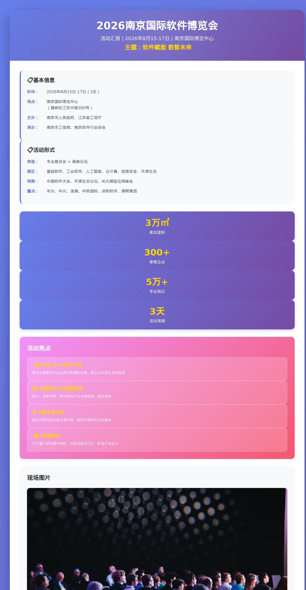

江苏省会议会展行业专业知识与活动跟踪系统
欢迎使用会议会展学习资料库！这里汇集了江苏省会议会展行业的专业知识、活动跟踪和学习资源。
使用搜索功能：在顶部搜索框输入关键词，快速查找所需内容
浏览文档：点击左侧导航栏查看各类文档
查看图片：点击"活动汇报图片"查看生成的汇报图
成为江苏省会议会展行业资深从业人员，精通活动策划、组织、执行全流程，具备风险预估和应急处理能力。
| 时间段 | 学习内容 | 学习方式 | 产出 |
|---|---|---|---|
| 周一 | 活动策划基础 | 阅读+案例分析 | 策划方案模板 |
| 周二 | 项目管理与执行 | 阅读+SOP制作 | 执行checklist |
| 周三 | 风险管理与应急 | 案例研究 | 风险清单 |
| 周四 | 行业法规与标准 | 政策研读 | 合规要点 |
| 周五 | 案例复盘与总结 | 案例分析 | 经验总结 |
| 时间段 | 学习内容 | 学习方式 | 产出 |
|---|---|---|---|
| 周六 | 江苏省活动信息收集 | 网络搜索+官网浏览 | 活动清单 |
| 周日 | 周报撰写与汇报图制作 | 整理+设计 | 周报文档+汇报图 |
| 项目 | 信息 |
|---|---|
| 地址 | 建邺区江东中路300号 |
| 室内展览面积 | 17万平方米 |
| 室外展览面积 | 5万平方米 |
| 会议室 | 30+间 |
| 停车位 | 4000个 |
| 建成年份 | 2008年 |
| 官网 | www.njiec.com |
| 特点 | 南京最大、设施最先进的综合性展馆，可承接国际大型展会 |
| 项目 | 信息 |
|---|---|
| 地址 | 玄武区龙蟠路100号（南京火车站附近） |
| 室内展览面积 | 3万平方米 |
| 室外展览面积 | 1万平方米 |
| 会议室 | 10+间 |
| 停车位 | 800个 |
| 建成年份 | 2001年 |
| 特点 | 交通便利，适合中型展会和消费类展览 |
| 项目 | 信息 |
|---|---|
| 地址 | 建邺区邺城路6号 |
| 会议面积 | 约2万平方米 |
| 会议室 | 多个大型会议厅 |
| 停车位 | 2000+ |
| 特点 | 高端会议场所，适合国际会议、企业年会、论坛 |
| 活动名称 | 时间 | 地点 | 主办方 | 规模 | 类型 |
|---|---|---|---|---|---|
| 南京国际软件博览会 | 8.15-17 | 南京国际博览中心 | 南京市人民政府、江苏省工信厅 | 3万㎡/300+展商/5万+观众 | 展会+论坛 |
| 中国（南京）国际新能源车展 | 8.22-24 | 南京国际博览中心 | 中国国际贸易促进委员会、南京市人民政府 | 4万㎡/200+品牌/8万+观众 | 消费展 |
| 南京国际人工智能应用展 | 8.8-10 | 南京国际展览中心 | 南京市科技局 | 1.5万㎡/150+展商 | 专业展 |
| 中国（南京）国际生物医药博览会 | 8.5-7 | 南京青奥会议中心 | 南京市卫健委 | 会议+展览 | 论坛+展览 |
| 活动名称 | 时间 | 地点 | 主办方 | 规模 | 类型 |
|---|---|---|---|---|---|
| 中国（南京）国际物流博览会 | 9.5-7 | 南京国际博览中心 | 南京市商务局 | 2万㎡ | 专业展 |
| 中国（南京）智能制造峰会 | 9.12-13 | 南京青奥会议中心 | 南京市工信局 | 2000人 | 高端论坛 |
| 南京国际大健康产业博览会 | 9.18-20 | 南京国际展览中心 | 江苏省卫健委 | 1万㎡ | 专业展 |
| 南京国际食品博览会 | 9.25-27 | 南京国际博览中心 | 南京市商务局 | 1.5万㎡ | 消费展 |
| 活动名称 | 时间 | 地点 | 主办方 | 规模 | 类型 |
|---|---|---|---|---|---|
| 南京国际新消费博览会 | 10.1-3 | 南京国际博览中心 | 南京市商务局 | 3万㎡ | 消费展 |
| 中国（南京）国际数字经济博览会 | 10.10-12 | 南京国际博览中心 | 南京市人民政府 | 4万㎡ | 综合展 |
| 中国（南京）国际文化创意产业博览会 | 10.18-20 | 南京国际青年文化中心 | 南京市委宣传部 | 1.5万㎡ | 专业展 |
| 南京国际软件产品博览会（秋季） | 10.25-27 | 南京国际博览中心 | 南京市工信局 | 2万㎡ | 专业展 |
| 要素 | 内容 | 关键问题 |
|---|---|---|
| Why | 活动目的 | 为什么要办这个活动？ |
| What | 活动主题 | 活动是什么？核心内容是什么？ |
| Who | 参与人员 | 谁来参加？目标受众是谁？ |
| When | 时间安排 | 什么时候办？持续多久？ |
| Where | 地点选择 | 在哪里办？场地要求？ |
| How | 执行方式 | 怎么办？流程是什么？ |
| How much | 预算 | 花多少钱？投入产出比？ |
时间轴：
人员配置：
每日流程：
| 风险 | 概率 | 影响 | 预防措施 | 应急预案 |
|---|---|---|---|---|
| 踩踏事故 | 低 | 极高 | 限流、单向通行、安保 | 立即疏散、医疗救援 |
| 火灾 | 低 | 极高 | 禁烟、灭火器、通道 | 疏散、报警、灭火 |
| 设备故障 | 中 | 中 | 备用设备、提前检测 | 切换备用、暂停活动 |
| 食品安全 | 低 | 高 | 资质审查、留样 | 送医、封存、调查 |
| 风险 | 概率 | 影响 | 预防措施 | 应急预案 |
|---|---|---|---|---|
| 嘉宾取消 | 中 | 中 | 备选嘉宾、录播 | 调整议程、替补上场 |
| 展商缺席 | 中 | 中 | 押金制度、确认函 | 调整展位、替补展商 |
| 人流不足 | 中 | 高 | 多渠道宣传、优惠 | 加大推广、现场引流 |
| 天气恶劣 | 中 | 高 | 关注预报、室内备选 | 启用备用方案 |
触发条件：现场人数达到最大承载量的80%
响应措施：
触发条件：现场人员突发疾病或受伤
响应措施：
医疗资源配置：
| 场馆 | 城市 | 室内面积 | 室外面积 | 会议室 | 停车位 | 建成年份 |
|---|---|---|---|---|---|---|
| 南京国际博览中心 | 南京 | 17万㎡ | 5万㎡ | 30+ | 4000 | 2008 |
| 南京国际展览中心 | 南京 | 3万㎡ | 1万㎡ | 10+ | 800 | 2001 |
| 苏州国际博览中心 | 苏州 | 15万㎡ | 3万㎡ | 20+ | 3500 | 2004 |
| 无锡太湖国际博览中心 | 无锡 | 10万㎡ | 2万㎡ | 15+ | 2500 | 2008 |
| 常州国际会展中心 | 常州 | 5万㎡ | 1万㎡ | 10+ | 1500 | 2009 |
| 徐州国际会展中心 | 徐州 | 4万㎡ | 1万㎡ | 8+ | 1000 | 2012 |
| 术语 | 英文 | 含义 |
|---|---|---|
| 展会 | Exhibition/Trade Show | 集中展示产品、技术的活动 |
| 会议 | Conference/Convention | 讨论、交流、决策的聚会 |
| 论坛 | Forum | 专题讨论、思想交流 |
| 主场搭建 | Main Contractor | 负责展馆整体搭建的供应商 |
| 特装展位 | Custom Booth | 企业自行设计的个性化展位 |
| 标准展位 | Standard Booth | 统一规格的标准化展位 |
| KV | Key Visual | 活动主视觉设计 |
| 人流 | Traffic | 参观人数 |
| 转化率 | Conversion Rate | 参观者转化为客户的比例 |
| ROI | Return on Investment | 投资回报率 |
六大风险类型：
| 影响程度 | 低(1) | 中(2) | 高(3) | 极高(4) |
|---|---|---|---|---|
| 极高概率(4) | 中 | 高 | 极高 | 极高 |
| 高概率(3) | 低 | 中 | 高 | 极高 |
| 中概率(2) | 低 | 低 | 中 | 高 |
| 低概率(1) | 低 | 低 | 低 | 中 |
时间管控标准：
| 管理模块 | 关键要点 | 人员配置 |
|---|---|---|
| 签到管理 | 电子签到、资料领取、引导入场 | 每台2-3人 |
| 引导管理 | 标识系统、引导人员、电子引导 | 关键节点配置 |
| 安保管理 | 入场安检、人流管控、巡逻检查 | 按面积和人数 |
| 物流管理 | 物资分类、进出场流程、仓储管理 | 专人负责 |
主要包括：搭建商、AV设备供应商、花艺供应商、摄影摄像供应商
管理要点：资质审查、案例考察、明确标准、定期检查、及时整改
报告周期：2026年8月20日 - 8月26日（第34周）
编制日期：2026年8月26日
编制人：云端Hermes助手
| 序号 | 活动名称 | 时间 | 地点 | 主办方 | 规模 | 类型 |
|---|---|---|---|---|---|---|
| 1 | 2026世界智能制造大会 | 7.10-12 | 南京 | 工信部/省政府 | 5万㎡/500+展商 | 展会+论坛 |
| 2 | 2026南京国际软件博览会 | 8.15-17 | 南京国际博览中心 | 南京市人民政府 | 3万㎡/300+展商 | 展会 |
| 3 | 2026苏州国际智能制造产业博览会 | 8.20-22 | 苏州国际博览中心 | 苏州市人民政府 | 2.5万㎡/400+展商 | 展会 |
| 4 | 2026中国（南京）国际新能源车展 | 8.22-24 | 南京国际博览中心 | 中国国际贸易促进委员会 | 4万㎡/200+展商 | 展会 |
| 5 | 2026无锡太湖国际博览会 | 8.18-20 | 无锡太湖国际博览中心 | 无锡市人民政府 | 2万㎡/250+展商 | 展会 |
| 序号 | 活动名称 | 时间 | 地点 | 主办方 | 规模 | 类型 |
|---|---|---|---|---|---|---|
| 1 | 2026中国（南京）国际物流博览会 | 9.5-7 | 南京国际博览中心 | 南京市商务局 | 2万㎡ | 展会 |
| 2 | 2026世界物联网博览会 | 9.10-13 | 无锡太湖国际博览中心 | 工信部/省政府 | 5万㎡/600+展商 | 展会+论坛 |
| 3 | 2026中国（苏州）国际工业设计博览会 | 9.15-17 | 苏州国际博览中心 | 苏州市工信局 | 1.5万㎡ | 展会 |
| 4 | 2026南京国际大健康产业博览会 | 9.18-20 | 南京国际展览中心 | 江苏省卫健委 | 1万㎡ | 展会 |
| 5 | 2026南京国际新消费博览会 | 10.1-3 | 南京国际博览中心 | 南京市商务局 | 3万㎡ | 展会 |
| 项目 | 内容 |
|---|---|
| 活动名称 | 2026南京国际软件博览会（软博会） |
| 活动时间 | 2026年8月15日-17日 |
| 活动地点 | 南京国际博览中心（建邺区江东中路300号） |
| 主办单位 | 南京市人民政府、江苏省工信厅 |
| 承办单位 | 南京市工信局、南京软件行业协会 |
| 活动类型 | 专业展览会+高峰论坛 |
| 活动规模 | 展览面积3万平方米，参展企业300+，专业观众5万+人次 |
| 项目 | 内容 |
|---|---|
| 活动名称 | 2026中国（南京）国际新能源车展 |
| 活动时间 | 2026年8月22日-24日 |
| 活动地点 | 南京国际博览中心 |
| 主办单位 | 中国国际贸易促进委员会、南京市人民政府 |
| 活动类型 | 消费类展览会 |
| 活动规模 | 展览面积4万平方米，参展品牌200+，观众8万+人次 |
| 风险类型 | 风险描述 | 影响范围 | 建议措施 |
|---|---|---|---|
| 安全风险 | 大型车展人流密集，需防范踩踏 | 南京新能源车展 | 加强人流管控，设置单向通行 |
| 天气风险 | 9月台风季，户外活动需关注天气 | 所有9月户外活动 | 制定恶劣天气应急预案 |
| 政策风险 | 大型活动审批流程可能收紧 | 全行业 | 提前3个月完成审批手续 |
| 运营风险 | 场馆排期紧张，档期冲突 | 南京、苏州场馆 | 提前6-12个月锁定档期 |
报告周期：2026年__月__日 - __月__日（第__周）
编制日期：2026年__月__日
编制人：云端Hermes助手
| 序号 | 活动名称 | 时间 | 地点 | 主办方 | 规模 | 类型 |
|---|---|---|---|---|---|---|
| 1 | ||||||
| 2 | ||||||
| 3 |
| 序号 | 活动名称 | 时间 | 地点 | 主办方 | 规模 | 类型 |
|---|---|---|---|---|---|---|
| 1 | ||||||
| 2 | ||||||
| 3 |
（插入活动现场图片，包括：展馆外观、展位布置、人流情况、特色展品、开幕式等）
| 场馆名称 | 本周使用率 | 下周预约 | 备注 |
|---|---|---|---|
| 南京国际博览中心 | |||
| 南京国际展览中心 | |||
| 苏州国际博览中心 | |||
| 无锡太湖国际博览中心 | |||
| 常州国际会展中心 |
（本周观察到的行业新动向、新模式、新技术）
（新出台的会展相关政策、补贴、扶持措施）
（主要竞争对手动态、市场份额变化）
| 风险类型 | 风险描述 | 影响范围 | 建议措施 |
|---|---|---|---|
| 安全风险 | |||
| 政策风险 | |||
| 市场风险 | |||
| 运营风险 |
（理论知识学习情况）
（对实际活动的观察和思考）
（值得借鉴的做法、需要避免的问题）
（即将举办的重要活动）
（计划学习的知识点）
（计划深入了解的领域）
| 配色名称 | CSS类名 | 效果 |
|---|---|---|
| 蓝紫色渐变 | theme-blue | background: linear-gradient(135deg, #667eea 0%, #764ba2 100%) |
| 绿色渐变 | theme-green | background: linear-gradient(135deg, #11998e 0%, #38ef7d 100%) |
| 橙红色渐变 | theme-orange | background: linear-gradient(135deg, #f093fb 0%, #f5576c 100%) |
| 深色系 | theme-dark | background: linear-gradient(135deg, #2c3e50 0%, #4ca1af 100%) |
<div class="report-card theme-blue">
<div class="header">
<h1>活动名称</h1>
<div class="subtitle">副标题信息</div>
</div>
<div class="content">
<div class="info-section">
<h2>基本信息</h2>
<!-- 活动基本信息 -->
</div>
<div class="image-section">
<h2>现场图片</h2>
<!-- 图片展示区 -->
</div>
</div>
<div class="stats-bar">
<!-- 数据统计 -->
</div>
</div>
活动时间：2026年8月15-17日
活动地点：南京国际博览中心
活动规模：3万㎡ / 300+展商 / 5万+观众

为会议会展活动提供酒店资源参考，涵盖新街口、河西、江宁、浦口四大区域。
| 基本信息 | 交通距离 | 会场信息 |
|---|---|---|
|
星级：五星级 地址：鼓楼区汉中路2号 电话：025-84711888 房间数：约550间 |
南京南站：约15公里，25-30分钟 南京站：约8公里，20-25分钟 禄口机场：约40公里，50-60分钟 |
主要会场：金陵厅 面积：约1200平方米 楼层：2楼 容纳人数：约1000人（剧院式） 自助餐厅：金陵楼·全日餐厅（2楼） |
| 基本信息 | 交通距离 | 会场信息 |
|---|---|---|
|
星级：五星级 地址：鼓楼区中央路329号 电话：025-86688888 房间数：约556间 |
南京南站：约18公里，30-35分钟 南京站：约5公里，15-20分钟 禄口机场：约45公里，55-65分钟 |
主要会场：香格里拉大宴会厅 面积：约1500平方米 楼层：3楼 容纳人数：约1200人（剧院式） 自助餐厅：星空餐厅（1楼） |
| 基本信息 | 交通距离 | 会场信息 |
|---|---|---|
|
星级：五星级 地址：鼓楼区山西路9号 电话：025-83218888 房间数：约470间 |
南京南站：约16公里，28-33分钟 南京站：约6公里，18-23分钟 禄口机场：约42公里，52-62分钟 |
主要会场：银河厅 面积：约1000平方米 楼层：3楼 容纳人数：约800人（剧院式） 自助餐厅：7楼全日餐厅（7楼） |
| 基本信息 | 交通距离 | 会场信息 |
|---|---|---|
|
星级：五星级 地址：建邺区扬子江大道208号 电话：025-86686666 房间数：约280间 |
南京南站：约20公里，30-35分钟 南京站：约15公里，25-30分钟 禄口机场：约45公里，55-65分钟 |
主要会场：涵碧厅 面积：约1800平方米 楼层：3楼 容纳人数：约1500人（剧院式） 自助餐厅：全日餐厅（1楼） |
| 基本信息 | 交通距离 | 会场信息 |
|---|---|---|
|
星级：五星级 地址：建邺区邺城路8号 电话：025-86686888 房间数：约350间 |
南京南站：约18公里，28-33分钟 南京站：约16公里，25-30分钟 禄口机场：约42公里，52-62分钟 |
主要会场：卓美亚大宴会厅 面积：约1600平方米 楼层：3楼 容纳人数：约1300人（剧院式） 自助餐厅：全日餐厅（1楼） |
| 基本信息 | 交通距离 | 会场信息 |
|---|---|---|
|
星级：五星级 地址：建邺区应天大街809号 电话：025-86686688 房间数：约400间 |
南京南站：约15公里，25-30分钟 南京站：约14公里，23-28分钟 禄口机场：约40公里，50-60分钟 |
主要会场：费尔蒙大宴会厅 面积：约1400平方米 楼层：4楼 容纳人数：约1100人（剧院式） 自助餐厅：The Living Room（1楼） |
| 基本信息 | 交通距离 | 会场信息 |
|---|---|---|
|
星级：五星级 地址：建邺区扬子江大道208号 电话：025-86686666 房间数：约320间 |
南京南站：约20公里，30-35分钟 南京站：约15公里，25-30分钟 禄口机场：约45公里，55-65分钟 |
主要会场：洲际大宴会厅 面积：约1700平方米 楼层：3楼 容纳人数：约1400人（剧院式） 自助餐厅：全日餐厅（1楼） |
| 基本信息 | 交通距离 | 会场信息 |
|---|---|---|
|
星级：五星级 地址：建邺区邺城路5号 电话：025-86686688 房间数：约450间 |
南京南站：约18公里，28-33分钟 南京站：约16公里，25-30分钟 禄口机场：约42公里，52-62分钟 |
主要会场：国际会议厅 面积：约2000平方米 楼层：2楼 容纳人数：约1600人（剧院式） 自助餐厅：全日餐厅（1楼） |
| 基本信息 | 交通距离 | 会场信息 |
|---|---|---|
|
星级：四星级 地址：建邺区江东中路369号 电话：025-86686666 房间数：约280间 |
南京南站：约17公里，27-32分钟 南京站：约13公里，22-27分钟 禄口机场：约41公里，51-61分钟 |
主要会场：新华厅 面积：约800平方米 楼层：3楼 容纳人数：约600人（剧院式） 自助餐厅：全日餐厅（1楼） |
| 基本信息 | 交通距离 | 会场信息 |
|---|---|---|
|
星级：五星级 地址：建邺区江东中路359号 电话：025-86686666 房间数：约350间 |
南京南站：约17公里，27-32分钟 南京站：约13公里，22-27分钟 禄口机场：约41公里，51-61分钟 |
主要会场：万丽大宴会厅 面积：约1300平方米 楼层：3楼 容纳人数：约1000人（剧院式） 自助餐厅：全日餐厅（1楼） |
| 基本信息 | 交通距离 | 会场信息 |
|---|---|---|
|
星级：五星级 地址：江宁区双龙大道1519号 电话：025-86686666 房间数：约380间 |
南京南站：约25公里，35-40分钟 南京站：约28公里，40-45分钟 禄口机场：约30公里，40-45分钟 |
主要会场：金鹰厅 面积：约1200平方米 楼层：3楼 容纳人数：约900人（剧院式） 自助餐厅：全日餐厅（1楼） |
| 基本信息 | 交通距离 | 会场信息 |
|---|---|---|
|
星级：五星级 地址：江宁区紫金路9号 电话：025-86686666 房间数：约300间 |
南京南站：约28公里，38-43分钟 南京站：约30公里，42-47分钟 禄口机场：约25公里，35-40分钟 |
主要会场：紫金厅 面积：约1500平方米 楼层：2楼 容纳人数：约1200人（剧院式） 自助餐厅：全日餐厅（1楼） |
| 基本信息 | 交通距离 | 会场信息 |
|---|---|---|
|
星级：四星级 地址：江宁区翠屏山风景区 电话：025-86686666 房间数：约200间 |
南京南站：约22公里，32-37分钟 南京站：约25公里，37-42分钟 禄口机场：约28公里，38-43分钟 |
主要会场：翠屏厅 面积：约900平方米 楼层：2楼 容纳人数：约700人（剧院式） 自助餐厅：全日餐厅（1楼） |
| 基本信息 | 交通距离 | 会场信息 |
|---|---|---|
|
星级：五星级 地址：浦口区浦滨路666号 电话：025-86686666 房间数：约500间 |
南京南站：约35公里，45-50分钟 南京站：约30公里，40-45分钟 禄口机场：约55公里，65-75分钟 |
主要会场：扬子江国际会议厅 面积：约2500平方米 楼层：2楼 容纳人数：约2000人（剧院式） 自助餐厅：全日餐厅（1楼） |
| 基本信息 | 交通距离 | 会场信息 |
|---|---|---|
|
星级：五星级 地址：浦口区滨江大道399号 电话：025-86686666 房间数：约350间 |
南京南站：约32公里，42-47分钟 南京站：约28公里，38-43分钟 禄口机场：约52公里，62-72分钟 |
主要会场：华邑大宴会厅 面积：约1600平方米 楼层：2楼 容纳人数：约1300人（剧院式） 自助餐厅：彩丰楼全日餐厅（1楼） |
| 基本信息 | 交通距离 | 会场信息 |
|---|---|---|
|
星级：四星级 地址：浦口区江浦街道文德路58号 电话：025-86686666 房间数：约250间 |
南京南站：约30公里，40-45分钟 南京站：约26公里，36-41分钟 禄口机场：约50公里，60-70分钟 |
主要会场：丰大宴会厅 面积：约1000平方米 楼层：3楼 容纳人数：约800人（剧院式） 自助餐厅：全日餐厅（1楼） |
📝 备注说明：
部分信息为基于公开资料的整理，具体数据建议通过以下方式核实：